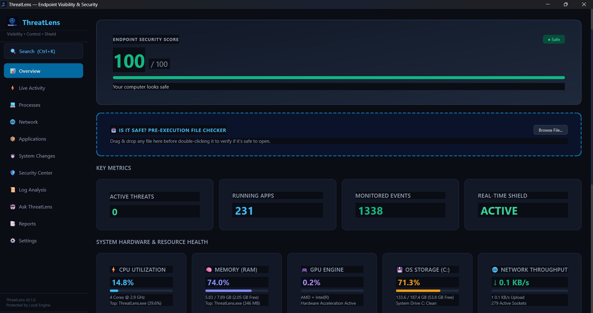

Traditional antivirus operates as an authoritarian black box, demanding blind faith. ThreatLens delivers complete transparency — real-time process lineage, Shannon entropy heuristics, hardware telemetry, and explainable AI. 100% on your machine.

Five first-principles breakthroughs that eliminate the security black box forever.
When an event fires, legacy antivirus flashes a vague pop-up and shuts you out. ThreatLens decodes raw kernel telemetry into structured human thought: What happened, Who launched it, Where on disk, Why it matters, and Recommended action.
Zero cloud infrastructure. No sign-up. No analytics telemetry. Your security data is written strictly to your local SQLite WAL database.
An embedded natural language classifier parses obfuscated CLI arguments, Base64 stagers, and LOLBins locally on your CPU.
Ransomware and crypters pack their binaries into mathematical randomness. Shannon math analyzes byte distributions in microseconds.
Renders malicious executables mathematically inert by scrambling PE headers. 100% restorable with zero byte loss on false positives.
Trigger real-world attack scenarios and watch how ThreatLens's telemetry bus responds in microseconds. Hit [ Why? ] on any event.
See how ThreatLens compares to default OS protections, legacy suites, and enterprise cloud agents.
| Capability | ⚡ ThreatLens v1.0 | Windows Defender | Legacy Antivirus | Cloud EDR |
|---|---|---|---|---|
|
Data Sovereignty
Zero packets sent off the device
|
✓ 100% Offline | ⚠️ Cloud Telemetry | ✕ Cloud File Scanning | ✕ Full Event Uplink |
|
5-Point Explainability
Plain English reason for every alert
|
✓ Neural Grammar | ✕ Generic Trojan Name | ✕ Vague Modal | ⚠️ Cryptic SOC Codes |
|
Process Lineage Trees
Real-time parent-child execution trace
|
✓ Live Execution Tree | ✕ Not Available | ✕ Not Available | ✓ Enterprise Tier |
|
Shannon Entropy Math
Flags packed malware >7.4 before execution
|
✓ Real-time Math | ✕ Hash Signatures | ✕ Signature Files | ✓ Cloud ML Heuristics |
|
Hardware Telemetry
CPU, RAM, native Windows PDH GPU, disk, net
|
✓ Integrated HUD | ✕ Task Manager Only | ✕ High CPU Overhead | ⚠️ Background Agent |
|
Quarantine Recovery
Reversibility with zero file loss
|
✓ Reversible XOR | ⚠️ Auto-Delete | ⚠️ Proprietary Container | ⚠️ Cloud Quarantine |
|
Pricing & License
Endpoint cost & freedom
|
✓ 100% Free · MIT | ✓ Built into Windows | ✕ $59.99/yr Subscription | ✕ $180+/endpoint/yr |
PRAGMA synchronous = NORMAL ensuring sub-millisecond writes under high event volume.pefile static byte analysis (>7.4 packed threshold).One standalone installer. No cloud account. No subscriptions. Absolute endpoint visibility from the moment you launch.
Download ThreatLens_Setup.exe (v1.0)ThreatLens_Setup.exe /VERYSILENT /SUPPRESSMSGBOXES
irm https://raw.githubusercontent.com/stebyvarghese1/ThreatLens/main/scripts/install.ps1 | iex
git clone https://github.com/stebyvarghese1/ThreatLens.git && cd ThreatLens && python -m app.main
winget install --id StebyVarghese.ThreatLens -e --source winget